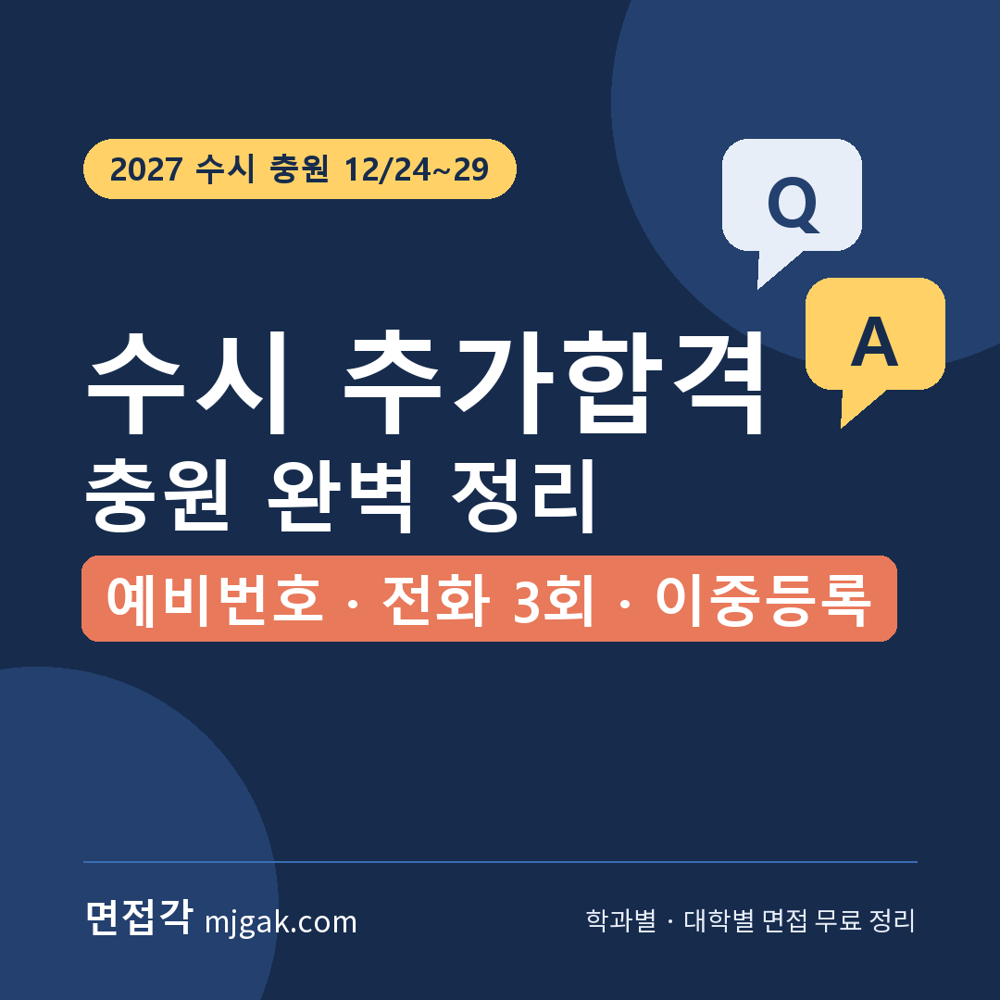
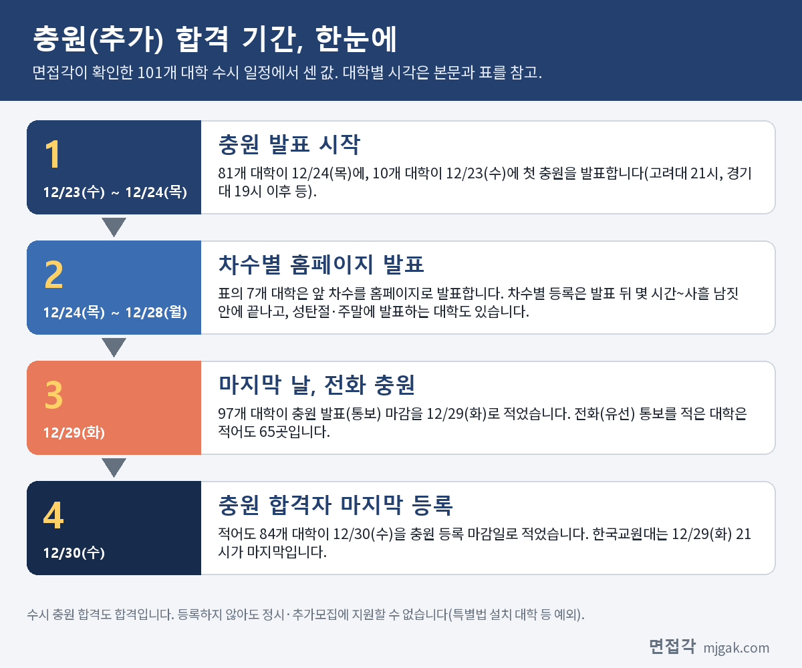
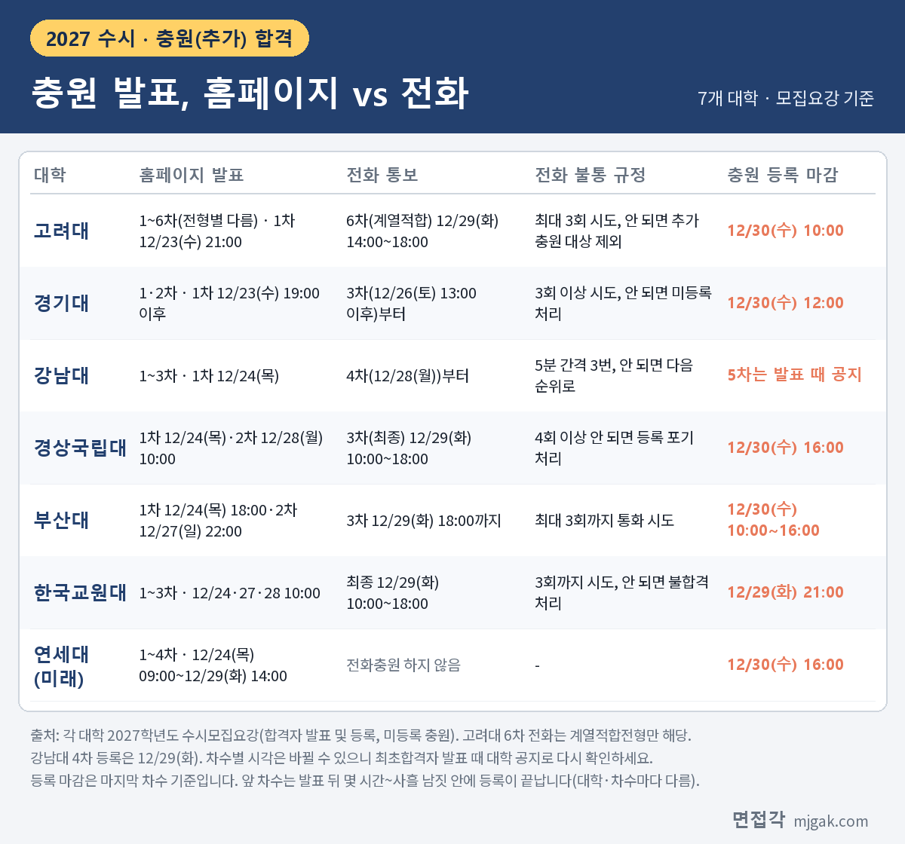
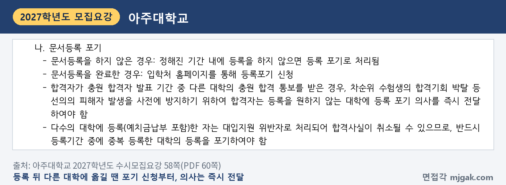

Ctrl+V (서식 유지됨)제목
본문 (이 영역 전체가 복사됩니다)
📷 여기에 이미지 넣기 — 썸네일 — thumb-extra.png (대표 이미지로 지정)
최초합격자 발표에서 '예비 ○번'을 받았다면 아직 끝난 것이 아닙니다. 기존 합격자 가운데 등록하지 않거나 등록 후 포기한 자리만큼, 예비 순위대로 합격자를 다시 뽑는 것이 충원(추가) 합격입니다. 2027학년도 수시에서는 이 글에서 센 101개 대학 중 81곳이 12월 24일(목)에, 고려대·경기대 등 10곳이 23일(수) 저녁에 시작해 29일(화)까지 충원합니다. 이 글은 예비번호를 받은 수험생이 이 기간 동안 무엇을 확인하고 무엇을 해야 하는지만 모았습니다. 예비번호는 어떻게 매겨지는지, 홈페이지 발표와 전화 통보는 어떻게 나뉘는지, 전화를 못 받으면 어떻게 되는지, 이미 다른 대학에 등록했다면 어떤 순서로 옮기는지를 대학 모집요강 원문으로 보여 드립니다. 대학별 최초합격자 발표 시각과 12월 21일~23일 최초합격자 등록은 이전 글 "2027 수시 합격자 발표일 총정리"에 정리했으니 그 글을 참고하세요. 예비번호를 받은 고3·재수생과, 전화를 함께 기다릴 학부모님이 읽으시면 됩니다.
1. 충원 기간 한눈에
📷 여기에 이미지 넣기 — 도식 — extra-flow.png
면접각이 2027학년도 수시모집요강에서 발표·등록 일정을 확인한 101개 대학의 충원 일정을 세어 보았습니다(이 글에서 센 값). 첫 충원 발표는 81곳이 12월 24일(목), 10곳이 12월 23일(수)입니다. 고려대는 최초합격자 등록이 끝난 12월 23일(수) 21시에 1차 충원을 발표하고(9쪽), 경기대는 같은 날 19시 이후에 발표합니다(10쪽). 충원 발표(통보) 마감을 12월 29일(화)로 적은 대학은 97곳이고, 충원 합격자의 마지막 등록일을 12월 30일(수)로 적은 대학은 적어도 84곳입니다.
날짜보다 더 조심할 것은 차수별 등록 시간입니다. 충원 합격자는 자기 차수의 등록 기간 안에 등록해야 하는데, 이 기간이 짧은 대학이 있습니다. 고려대 4차는 12월 28일(월) 13시에 발표하고 같은 날 17시까지 등록을 받습니다(9쪽). 경상국립대 1차는 12월 24일(목) 10시 발표, 같은 날 16시까지 등록이고(78쪽), 한국교원대 1~3차는 10시 발표, 그날 15시까지 등록입니다(46쪽). 한국항공대 1차는 12월 24일(목) 20시에 발표하고 다음 날 12월 25일(금) 10시에 등록을 마감합니다(6쪽). 경상국립대 모집요강은 "충원합격자는 반드시 해당 차수 등록기간에 등록하여야 함(미등록 시 등록 포기)"이라고 적었습니다(78쪽).
성탄절과 주말에 발표하는 대학도 있습니다. 강남대는 2차를 12월 25일(금), 3차를 26일(토)에 발표하고(12쪽), 부산대는 2차를 12월 27일(일) 22시에 공고합니다(23쪽). 반대로 아주대는 "주말/공휴일을 제외하고 매일" 충원 합격을 발표한다고 적었습니다(6쪽). 한국교원대는 최종 충원 등록 마감이 12월 29일(화) 21시라, 30일까지 기다리면 늦습니다(46쪽).
2. 예비번호(예비순위)는 어떻게 알 수 있나
예비번호를 최초합격자 발표 때 함께 알려 주는 대학이 있습니다. 한림대는 전형별 선발원칙에 "예비순위는 합격자 발표 시 함께 공지"라고 적었고(25쪽 등), 한경국립대는 예비합격자를 "성적순으로 합격자와 함께 발표함"이라고 적었습니다(53쪽). 한국교원대는 최초 합격자와 불합격자(사정제외자)를 뺀 나머지 인원을 전형성적순으로 예비 합격후보자로 정해 발표합니다(제2단계 전형에 응시한 사람 중 학과별로, 46쪽). 국민대는 충원 합격자를 "최초 합격자 발표 시 발표한 해당 모집단위의 예비 순위에 따라" 선발합니다(11쪽). 최초합격자 발표 화면에서 '불합격'만 보고 창을 닫지 말고, 예비 순위가 함께 적혀 있는지 확인하세요.
예비번호를 몇 번까지 주는지 정해 둔 대학도 있습니다. 덕성여대는 "예비합격자는 최초합격자 제외 5배수까지 발표를 원칙으로 합니다"라고 적고, 면접을 보는 덕성인재전형Ⅱ는 모집인원의 3배수, 유아교육과·약학과 등 일부 모집단위·전형은 2배수를 예비합격자로 발표한다고 적었습니다(15쪽). 한국항공대는 예비순위를 "모집인원의 2배수(최초합 인원까지 포함하여 3배수)까지 부여하며, 충원은 예비순위 내에서 이뤄집니다"라고 적었습니다(6쪽). 반대로 인천대는 예비순위자를 모집인원의 일정 배수까지 공고하지만 "결원의 보충은 예비순위자 범위를 넘더라도" 성적순으로 충원한다고 적었습니다(정원 외 전형은 예비순위 범위 안에서만, 8쪽).
예비번호를 받지 못하는 경우도 있습니다. 한림대는 지원 자격 미달자, 제출서류 미비자, 면접 결시자, 면접성적 미달자 등은 "예비순위 없이 불합격"이라고 적었습니다(25쪽).
예비번호를 읽는 법은 단순합니다. 같은 전형·같은 모집단위에서 예비 7번이면 내 앞에 6명이 있고, 앞 순위가 등록하지 않거나 포기해야 차례가 옵니다. 다만 몇 번까지 합격할지는 미리 알 수 없습니다. 충원 인원은 "기존 합격자의 미등록" 또는 "등록 후 포기" 인원만큼 정해지기 때문입니다(경상국립대 78쪽). 한경국립대는 "예비합격 순위는 충원발표 시 충원된 인원수에 따라 변경됨"이라고 적었으니(53쪽), 차수마다 바뀐 순위를 다시 보세요.
3. 충원 발표 방법: 홈페이지 차수 vs 전화
📷 여기에 이미지 넣기 — 이미지 1 — extra-table.png
충원 합격을 알리는 방법은 두 가지입니다. 대학 홈페이지에 명단을 올리는 방법과, 원서에 적은 번호로 전화하는 방법입니다. 101개 대학의 충원 안내 중 전화(유선) 통보를 적은 대학은 적어도 65곳입니다(이 글에서 센 값). 표의 대학처럼 앞 차수는 홈페이지, 뒤 차수는 전화로 나누는 곳이 있습니다.
나누는 시점은 대학마다 다릅니다. 경기대는 3차(12월 26일(토) 13시 이후)부터 "예비후보 순위에 따라 전화로 개별 통보한 후 입학처 홈페이지에 공지"합니다(10쪽). 강남대는 3차까지 홈페이지에 일괄 발표하고 4차부터 개별 통보합니다(12쪽). 경상국립대(78쪽)와 부산대(24쪽)는 마지막 3차만, 한국교원대는 최종 차수만 전화로 알립니다(47쪽). 고려대는 6차(12월 29일(화) 14시)에 계열적합전형만 전화로 통보하고, 같은 6차의 학교추천·학업우수·논술전형은 홈페이지로 발표합니다(나머지 전형은 6차가 없음, 9쪽). 연세대 미래캠퍼스는 "충원합격자 발표는 연세대학교 미래입학처 홈페이지로만 발표하며, 전화충원은 하지 않음"이라고 적었습니다(14쪽).
홈페이지 발표 차수에서는 전화가 오지 않습니다. 강남대는 최초 합격과 1·2·3차 추가합격자를 "개별 통보하지 않으므로 지원자가 직접 본교 입학처 홈페이지에서 확인"해야 한다고 적었고(12쪽), 아주대는 "인터넷을 통한 충원합격자 발표 시, 발표된 학생은 모두 합격자로 간주함"이라고 적었습니다(58쪽). 발표 시각에 직접 조회하지 않으면, 합격한 줄 모르고 등록 기간을 넘길 수 있습니다.
4. 전화를 놓치면
전화 차수에서는 몇 번 걸어도 안 받으면 다음 순위로 넘어갑니다. 101개 대학 중 '3회(3번) 통화가 안 되면' 불합격·등록 포기·차순위 충원 등으로 처리한다고 적은 대학이 적어도 31곳입니다(이 글에서 센 값). 원문 표현은 대학마다 조금씩 다릅니다.
- 강남대(12쪽): "지원자 및 보호자와 5분 간격으로 3번 통화 시도 후에도 연락이 되지 않거나 등록 의사를 밝히지 않을 시 다음 순위 지원자에게 합격순위가 넘어감". 5분 간격이면 세 번째 시도까지 10분 남짓입니다(이 글에서 계산한 값).
- 아주대(58쪽): "연락 두절 시(3회 이상 통화 시도 후에도 연결이 되지 않을 경우) 등록의사가 없는 것으로 간주, 등록포기로 처리함".
- 한국항공대(6쪽): "최종충원 기간 중 합격자가 3회 이상 연락되지 않는 경우 불합격 처리하고 다음 순위자를 선발합니다."
- 경상국립대(78쪽): "4회 이상 연락하여 통화가 되지 않는 지원자는 등록 의사가 없는 것으로 간주하여 등록 포기 처리"하고, 전화는 입학원서에 적은 지원자 연락처, 추가 연락처, 수험생 연락처 순으로 겁니다.
- 덕성여대(15쪽): 3회 이상 통화 시도 후 연락이 되지 않으면 "등록의사가 없는 것으로 간주하여 '합격 후 등록포기' 처리합니다(정시모집, 추가모집 지원 불가)."
더 조심할 점은 전화를 못 받아도 '합격'으로 남을 수 있다는 것입니다. 부산대 모집요강은 전화충원 중 "통화가 되지 않더라도 수시모집에 합격한 것으로 추후 정시모집 및 추가모집에 지원할 수 없으니"라고 적었습니다(24쪽). 덕성여대도 위처럼 '합격 후 등록포기'로 처리하고 정시·추가모집 지원이 안 된다고 적었습니다.
전화를 받으면 그 자리에서 답해야 할 수도 있습니다. 국민대는 전화충원 때 등록 여부 답변을 지원자 또는 보호자에게 요청하며 "답변 내용은 어떠한 경우에라도 추후 번복할 수 없습니다"라고 적었습니다(11쪽). 부산대는 전화로 충원합격 통보를 받으면 "미등록 의사를 밝히더라도" 정시·추가모집에 지원할 수 없다고 적었습니다(24쪽). 덕성여대(15쪽)와 경상국립대(78쪽)는 통화를 녹취합니다. 전화가 오기 전에 어느 대학이면 등록하고 어느 대학이면 거절할지 가족과 정해 두세요.
연락처가 바뀌었다면 미리 알려야 합니다. 덕성여대는 입학홈페이지의 입학원서 수정 요청 게시판으로(15쪽), 아주대는 인적사항 변경 신청서를 스캔해 메일로 보내는 방식으로(57쪽) 연락처 변경을 받습니다. 부산대는 전화번호가 바뀌거나 "장기간 연락을 받기 어려운 경우" 입학과에 알리라고 적었습니다(24쪽).
📷 여기에 이미지 넣기 — 이미지 2 — 제미나이 생성: 겨울 오후 창가 책상에서 휴대폰을 쥐고 전화를 기다리는 학생(실사) / "제미나이 프롬프트 1" · gem-extra-1.png
5. 이미 다른 대학에 등록했다면: 등록 포기와 이중등록
A대학에 등록해 둔 상태에서 B대학의 충원 합격 연락을 받을 수 있습니다. 이때 지킬 원칙은 두 가지입니다. 첫째, 수시는 한 대학에만 등록합니다. 아주대 모집요강은 수시모집 등록(온라인 문서등록·등록예치금 포함)을 2개 이상 대학에 하고 등록 기간 안에 포기하지 않으면 "이중등록으로 모든 대학의 입학이 취소됨"이라고 적었습니다(59쪽). 둘째, 포기는 바로 알립니다.
📷 여기에 이미지 넣기 — 캡처 1 — 아주대학교 2027학년도 수시모집요강 58쪽(PDF 60쪽): ajou-2027-extra-giveup.png
아주대는 문서등록을 마친 뒤 포기하려면 입학처 홈페이지에서 등록포기를 신청하라고 적었습니다. 그리고 다른 대학의 충원 합격 통보를 받으면 "차순위 수험생의 합격기회 박탈 등 선의의 피해자 발생"을 막기 위해 등록을 원하지 않는 대학에 포기 의사를 즉시 전달해야 한다고 적었습니다(58쪽).
순서는 '먼저 포기, 그다음 등록'입니다. 연세대 미래캠퍼스는 타 대학에 등록한 뒤 충원 합격해 옮기려면 "먼저 등록한 타 대학에 등록포기를 신청한 후" 등록하고, 포기하려는 대학의 "등록포기 승인여부를 반드시 확인"하라고 적었습니다(15쪽). 덕성여대는 먼저 등록한 대학에 등록포기원을 내고, 시급하면 전화로 먼저 포기 의사를 알리라고 안내합니다(15쪽). 부산대도 입학홈페이지에서 등록포기 신청을 완료한 뒤 다른 대학에 등록하라고 적었습니다(24쪽).
등록 포기 방법과 기한은 대학마다 다릅니다.
- 부산대(24쪽): 입학홈페이지 등록 포기 페이지 → 유의사항 확인 → 수험번호·생년월일 입력 → 휴대폰 인증 → 등록포기신청 → 등록포기 확인서 출력·보관. "등록 포기가 완료되면 절대 번복 불가"이고, 충원 합격자 발표 기한이 지나면 신청할 수 없습니다.
- 덕성여대(81쪽): 등록포기 신청 12월 24일(목)~29일(화), 마감 12월 29일(화) 18시. 입학홈페이지에서 신청하고, 원서에 적은 지원자·추가 연락처로 SMS 본인인증을 거칩니다.
- 고려대(9쪽): 등록 포기(문서등록포기) 신청기한 12월 29일(화) 10시, 입학처 홈페이지.
- 한국항공대(6쪽): 문서등록 취소 신청 12월 21일(월)~29일(화) 14시, 입학처 홈페이지 인터넷 신청.
- 연세대 미래캠퍼스(15쪽): 등록포기 신청기한 12월 18일(금) 10시~31일(목) 11시, 미래입학처 홈페이지.
고려대처럼 12월 29일 오전에 포기 신청이 끝나는 대학도 있습니다. 포기를 미루면 그 자리의 예비 순위 학생이 기회를 잃습니다.
등록예치금을 낸 대학이라면 환불까지 챙기세요. 덕성여대 모집요강은 이중 등록이 확인되면 입학이 취소되므로 "등록을 포기한 대학으로부터 반드시 등록 확인 예치금을 환불받아야" 한다고 적었습니다. 등록포기원을 냈는데 대학 사정으로 충원 발표 기간이 지난 뒤 환불받는 경우는 이중등록이 아니라고 덧붙였습니다(15쪽).
마지막으로, 포기해도 수시 합격은 지워지지 않습니다. 연세대 미래캠퍼스는 "등록포기를 했더라도 합격 사실은 유효하기 때문에 모든 대학의 정시모집 및 추가모집에 지원할 수 없음"이라고 적었습니다(15쪽). 다만 사관학교·경찰대학·과학기술원 등 특별법으로 설치된 대학과는 이 원칙을 적용하지 않습니다(아주대 57쪽). 자세한 내용은 이전 글 "2027 수시 합격자 발표일 총정리"를 참고하세요.
6. 충원 기간 하루 일정 제안
아래는 이 글이 제안하는 일정입니다. 대학이 정한 규칙이 아니니, 지원 대학 발표 시각에 맞춰 고쳐 쓰세요.
12월 23일(수)까지: 지원 대학마다 예비번호, 홈페이지 발표 차수와 시각, 전화 차수, 차수별 등록 마감, 등록 포기 신청 기한을 종이 한 장에 적습니다. 위 표처럼 칸을 나누면 됩니다. 붙으면 어디에 등록할지 순서도 가족과 정해 적어 둡니다. 고려대·경기대처럼 23일 저녁에 1차를 발표하는 대학도 있으니 이날부터 시작합니다.
매일 아침: 휴대폰 충전과 보조배터리를 확인하고, 벨소리를 켜고, 방해금지 모드와 모르는 번호 차단을 끕니다. 원서에 추가 연락처로 적은 보호자도 똑같이 합니다.
발표 시각 10분 전: 입학처 합격자 조회 페이지를 열어 두고, 조회에 필요한 수험번호와 생년월일을 옆에 둡니다.
발표 직후: 결과를 확인하고, 합격이면 정해 둔 순서대로 등록할지 정합니다. 옮긴다면 새 대학 등록 기간이 남았는지 확인하고, 먼저 등록한 대학 포기 신청, 새 대학 문서등록 순서로 합니다. 확인서는 화면 캡처나 출력으로 남깁니다.
저녁: 다음 날 발표 시각과 등록 마감을 다시 보고, 예비 순위가 바뀌었는지 확인합니다.
12월 29일(화): 표의 7개 대학 중 연세대 미래캠퍼스를 뺀 6곳은 이날 18시까지 전화 통보가 이어질 수 있습니다. 경상국립대·한국교원대는 10시~18시, 고려대 계열적합은 14시~18시입니다. 이날은 시험·약속·장거리 이동을 피하고 휴대폰을 곁에 둡니다.
12월 30일(수): 마지막 차수 등록 마감 전에 등록을 마쳤는지, 등록한 대학이 한 곳뿐인지 다시 확인합니다.
7. 충원 합격 자주 묻는 것들
Q. 예비 ○번이면 합격할 수 있나요?
A. 미리 알 수 없습니다. 충원 인원은 기존 합격자의 미등록 또는 등록 후 포기 인원만큼이라(경상국립대 78쪽) 모집단위마다 다릅니다. 한국항공대처럼 예비순위 범위 안에서만 충원하는 대학(6쪽)도 있고, 인천대처럼 범위를 넘어서도 충원하는 대학(정원 외 전형은 범위 안에서만, 8쪽)도 있습니다.
Q. 전화로 합격 통보를 받으면 바로 대답해야 하나요?
A. 국민대는 전화충원 때 등록 여부 답변을 요청하고, 그 답변은 번복할 수 없다고 적었습니다(11쪽). 모집요강에 답을 기다려 주는 시간은 적혀 있지 않으니, 전화를 받기 전에 대학별로 등록할지 말지 정해 두세요.
Q. 충원 합격을 거절하면 정시에 지원할 수 있나요?
A. 아닙니다. 아주대 모집요강은 수시 합격자(최초 합격자 및 충원 합격자)는 등록의사와 관계없이 합격자로 처리되어 정시·추가모집에 지원할 수 없다고 적었습니다(57쪽). 부산대는 전화 통보를 받고 미등록 의사를 밝힌 경우와 통화가 되지 않은 경우도 정시·추가모집에 지원할 수 없다고 적었습니다(24쪽).
Q. 등록을 포기했다가 다시 등록할 수 있나요?
A. 부산대는 "등록 포기가 완료되면 절대 번복 불가"(24쪽), 연세대 미래캠퍼스는 "등록포기 이후에는 재등록이 절대 불가"(15쪽)라고 적었습니다. 덕성여대는 합격이 취소되면 번복할 수 없으니 보호자와 충분히 상의하라고 적었습니다(81쪽). 포기 버튼은 옮길 대학의 등록 기간을 확인한 다음에 누르세요.
Q. 크리스마스와 주말에도 발표하나요?
A. 대학마다 다릅니다. 아주대는 주말·공휴일을 빼고 매일 발표하지만(6쪽), 강남대는 12월 25일(금)·26일(토)(12쪽), 부산대는 12월 27일(일) 22시(23쪽), 고려대는 12월 27일(일) 13시(9쪽)에 발표합니다.
8. 충원 기간 체크리스트
□ 지원 대학마다 내 예비번호(예비순위)를 확인해 적었다
□ 대학별 홈페이지 발표 차수·시각과 전화 통보 차수를 표로 만들었다
□ 차수별 등록 마감 시각과 등록 포기 신청 기한을 적었다
□ 원서에 적은 내 번호와 추가 연락처가 연결되는지 확인했다(바뀌었으면 대학에 알렸다)
□ 12월 23일~29일에는 모르는 번호도 받기로 하고, 보호자에게도 알렸다
□ 붙으면 어디에 등록할지 순서를 가족과 정했다
□ 대학을 옮길 때는 포기 신청 → 확인서 보관 → 새 대학 등록 순서로 하고, 한 곳에만 등록했는지 확인한다
9. 함께 보면 좋은 글
▷ 2027 수시 합격자 발표일 총정리
▷ 2027 수시 대학별 면접 총정리 글 모음
▷ 2027 수시 면접 일정 총정리
예비번호는 기다리기만 하는 번호가 아닙니다. 발표 시각, 등록 마감, 전화 한 통을 놓치지 않는 충원 기간을 보내세요.
※ 이 글의 날짜와 규정은 고려대학교, 경기대학교, 강남대학교, 경상국립대학교, 부산대학교, 한국교원대학교, 연세대학교 미래캠퍼스, 아주대학교, 덕성여자대학교, 한국항공대학교, 인천대학교, 한림대학교, 한경국립대학교, 국민대학교의 2027학년도 수시모집요강에서 인용했습니다. 괄호 안 쪽수는 각 모집요강에 인쇄된 쪽수입니다. 대학 수(81·10·97·84·65·31곳)는 면접각이 발표·등록 일정을 확인한 101개 대학의 정리 자료에서 이 글이 센 값이고, '적어도'는 모집요강에 있어도 정리 자료에 빠졌을 수 있어 최솟값이라는 뜻입니다. 충원 일정과 방법은 최초합격자 발표 때 바뀌거나 자세히 공지될 수 있으니 지원 대학 입학처 공지를 꼭 확인하세요.
면접각 "합격자 발표·등록·충원 일정" 페이지에서 대학 이름을 검색하면 충원 발표 기간과 방법, 충원 등록 마감, 출처 쪽수를 바로 볼 수 있습니다. 회원가입 없이 무료입니다.
태그 (#은 에디터가 자동으로 붙이므로 그대로 붙여 넣어도 됩니다)
넣을 이미지 목록 (docs/promo/img 폴더)




제미나이 프롬프트 1 — 겨울 오후 창가 책상에서 휴대폰을 쥐고 전화를 기다리는 학생(실사) (4:3) — 제미나이에 그대로 붙여 넣어 이미지를 만드세요